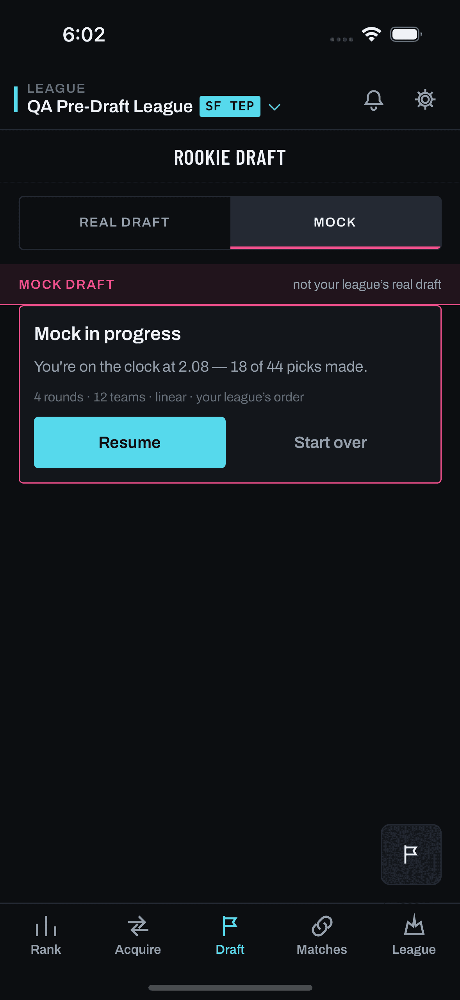
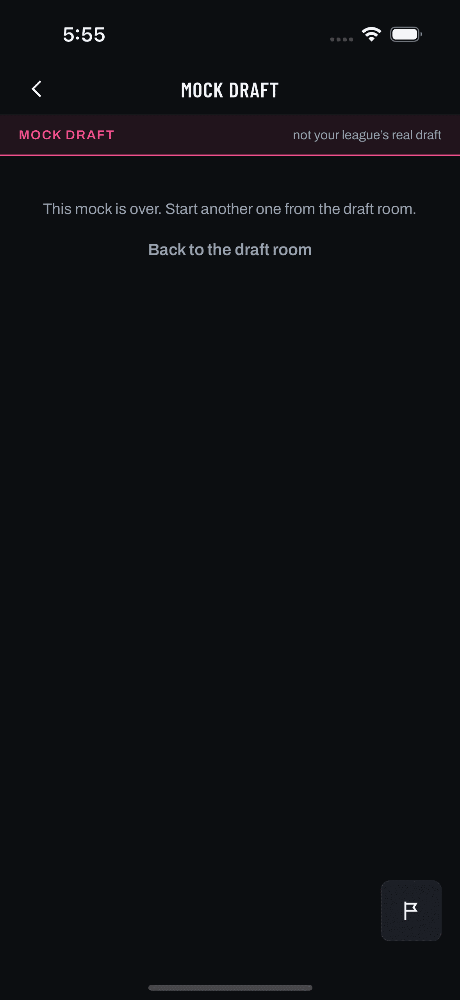

user_not_in_draft (#295 fail-loud half)What this page shows. The new refusal has two client surfaces, both drawn against their real
captures: the Draft Room's entry card (seventh mockBlock arm,
mock-entry.blocked.user_not_in_draft) and the session screen's typed-empty
(mock-draft.empty.user_not_in_draft). The entry card disables before any POST — the GET
ride-along capability now carries can_start: false, reason: "user_not_in_draft"
(LLD §3.3), so the user meets the refusal on arrival, not one tap late.
Copy contract: honest about why (no seat for your team in this draft), no promise of timelines and no “try again later”. Body and CTA strings are the LLD §1.6 placeholders — PRD owns final wording.
Capture note: no capture of any blocked-arm card exists in the screen library (the six shipped arms
were never captured — coverage gap, not policy). The nearest real captures are embedded: the healthy entry card
and the session screen's no_active_mock empty.

entry--card.png). The Mock side's entry card in its healthy state
— flare border, live CTAs. The blocked arms replace this card with a muted variant (line border, dim title,
dead CTA); none of the six shipped blocked arms has a capture.--line
border (flare highlight withdrawn), dim title, plain-words body, disabled secondary button whose label states
the condition — never “Start”. Newton (ESPN, the #305 reporter's league) shown because a stale roster
takeover / commissioner rebuild there is the realistic trigger.
empty--no-active-mock.png). The session screen's typed-empty
branch: mode rail stays up, centered copy, ghost return button. Today an unknown reason degrades to the
default: arm (“This mock draft isn’t available right now.”).emptyCopy arm, same layout as
every typed-empty. The testID is template-generated (mock-draft.empty.${emptyReason}) —
no structural change, copy only. No timeline promised, no retry implied: the ghost button returns to the room,
where the muted card states the same fact.class_not_loaded — with the
server-answered refusals, ahead of the board-derived ones — keyed on
postRefusal === 'user_not_in_draft' || probeReason === 'user_not_in_draft' (LLD §3.3). Drawing it
as a muted card (not an error card) matches its nature: a league condition, not a failure.